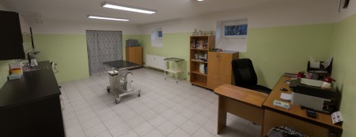
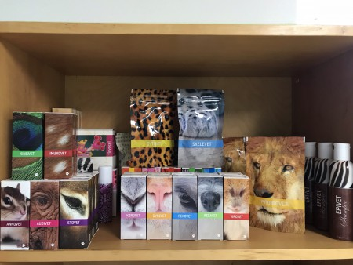
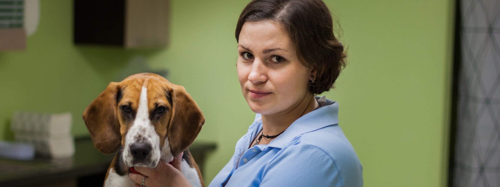
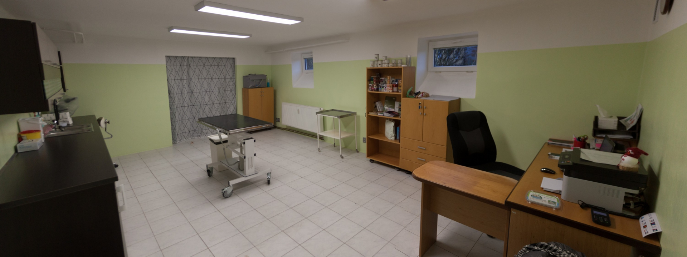
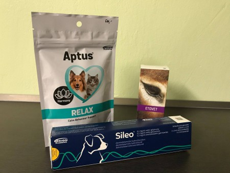
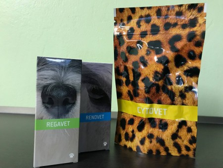
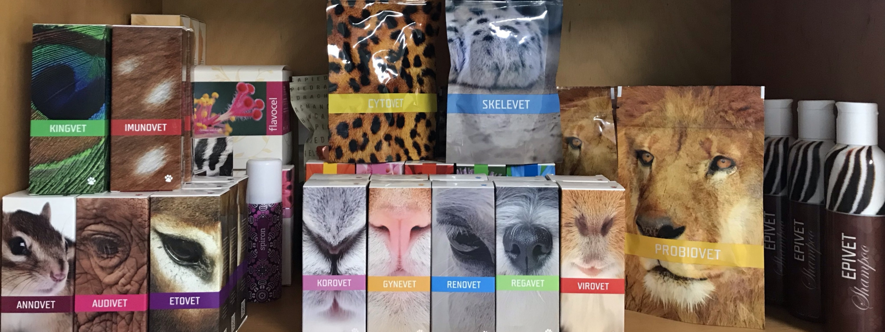

Dovolená
Ordinace bude uzavřena
Ve dnech 7.–10. května čerpáme řádnou dovolenou. V akutních případech kontaktujte prosím Veterinární kliniku Rožnov (571 654 321).
Zástup zajištěn
Soukromá veterinární praxe MVDr. Evy Vrátníkové. Specializujeme se na prevenci, diagnostiku a léčbu malých zvířat — s důrazem na šetrnou medicínu a přírodní preparáty tam, kde dávají smysl.

— naše ordinacePlánovaná uzavření, mimořádné ordinační hodiny a důležité informace pro naše klienty.
Ve dnech 7.–10. května čerpáme řádnou dovolenou. V akutních případech kontaktujte prosím Veterinární kliniku Rožnov (571 654 321).
Po návratu z dovolené ordinujeme ve středu 13. května mimořádně až do 19:00, aby se na řadu dostali všichni objednaní pacienti.
Sezónní detoxikační program pro psy a kočky — pro očistu organismu po zimním období. Konzultace zdarma při běžné prohlídce.
Od preventivních prohlídek po náročnější chirurgické zákroky — v ordinaci VETEVRA klademe důraz na pečlivou diagnostiku a šetrnou léčbu.
Pravidelné prohlídky, které zachytí problém dřív, než zvířátko začne strádat.
Moderní vyšetřovací metody pro přesné určení příčiny obtíží.
Léčba nemocí orgánových soustav s individuálně sestaveným plánem.
Operace měkkých tkání v moderně vybaveném sále s pečlivou anestezií.
Šetrná pomoc pomocí prověřených přírodních preparátů ENERGY.
Vše potřebné pro cestování s mazlíčkem do zahraničí.
Jak krmit, aby váš mazlíček dlouho prosperoval — produkty REICO.
Nejste si jisti? Zavolejte. Rádi poradíme i bez objednání.

Soukromou veterinární praxi VETEVRA otevřela ve Valašském Meziříčí v říjnu 2018. V ordinaci se zaměřuje především na prevenci, diagnostiku a léčbu nemocí malých zvířat — psů, koček a malých savců.
Tam, kde to dává smysl, sahá po přírodních přípravcích a celostním pohledu na pacienta. Ráda poskytne konzultaci ohledně výživy a preventivní péče o vaše čtyřnohé miláčky.
Pro vyšetření je potřeba se předem objednat — nejlépe telefonicky nebo přes objednávkový systém. Operační dny jsou vyhrazené pro plánované zákroky.
Útulná, světlá ordinace navržená tak, aby se v ní vaši mazlíčci cítili co nejlépe.





Ke každému pacientovi přistupujeme individuálně. Nejde jen o akutní problém — jde o celkový stav, prostředí a harmonii zvířete. Tam, kde mohou pomoci přírodní preparáty, sahám po nich rád(a).— MVDr. Eva Vrátníková
Ordinace je dobře dostupná autem i MHD (linka č. 1, zastávka Tesla I). Pro parkování využívejte prosím vyhrazené plochy v okolí.